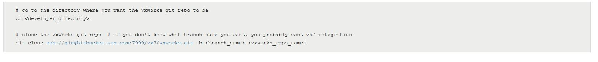
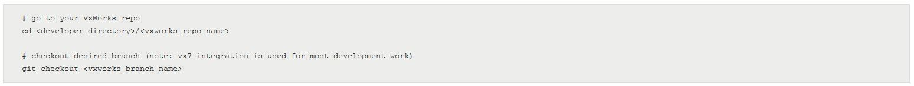
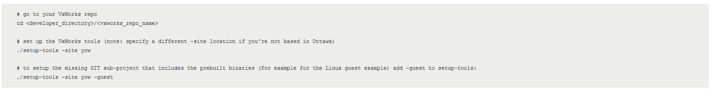
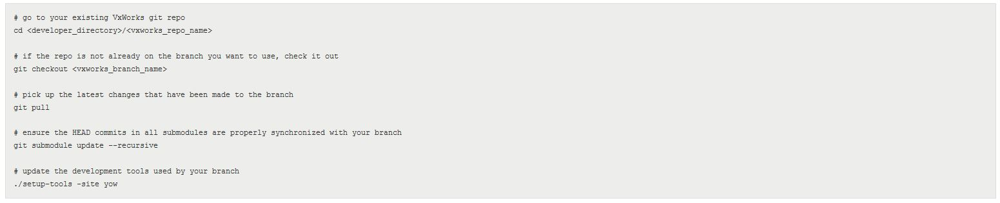
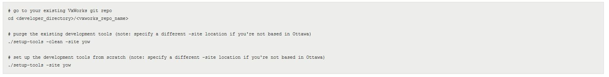

Helix Product Setup Guide¶
THIS PAGE IS CURRENTLY SERVING AS A PLACEHOLDER. IN PROGRESS for updates.
Purpose: As teams develop new Features, they are also responsible for adding new test cases into the overall VxWorks 7 regression test suites. The following document outlines the process for updating the VxWorks 7 regression test suite.
(Source:
Purpose¶
This Guide describes how to create a Helix installation that can be used for product development and testing.
The following must be done IF you are expected to push changes
Must be in or Added to the vxworks group in Bit Bucket. Submit a Jira for Infrastructure to ALA:Git or ask a Git Admin
Setup SSH keys BEFORE
Setting Up a VxWorks Git Repo¶
Before setting up a Git repo, a SSH key should be added to bitbucket by following:
Adding SSH keys
SSH keys are useful when you want to avoid entering your password every time you push and pull.
If working in multiple environments with different “HOME” directories, i.e. Unix and Windows, multiple SSH keys is needed, one for each (can add multiple SSH keys to your Bitbucket account)
For more info on ssh keys: https://confluence.atlassian.com/bitbucketserver/using-ssh-keys-to-secure-git-operations-776639772.html
If you don’t have an Unix or Windows SSH key defined yet, please see: https://confluence.atlassian.com/bitbucketserver/creating-ssh-keys-776639788.html
Procedure for adding a key to Bitbucket account:
Log into Bitbucket.
At the top of the page, the last icon on the right is a pull down menu for the User. Select Manage account.
In the left column, select SSH keys.
In the right pane, select Add key.
In your home directory, there is a .ssh sub-directory. In that directory is an id_rsa.pub Cut and paste the contents of this file into the Key text box.
If you don’t have an ssh key yet, see the instructions above.
id_rsa.pub is the default file name. If desired, this can be overridden when executing the ssh key generation command.
Press the Add key button at the bottom.
MULTIPLE SSH Keys!
Setting up a new git repo for doing Helix development is three step process.
Clone the VxWorks git repository.
The VxWorks repo is very big, so be sure to put it in a directory that has a lot of space! Helix developers typically use their personal directory on a build server. (No personal directory, ask where it can be created.)
Some developers find it convenient to name their VxWorks repo after the Git branch that will be checked out, which is typically vx7-integration. This makes it easy to keep track of things if you need to create multiple VxWorks repos, each using a different git branch. (If no repo name is specified, it will default to vxworks.)

Check out the VxWorks git branch you want to work on.
Since repo was just cloned, there is no need to do a ‘git pull’ to get the latest code for that branch.

Set up additional Helix development tools.
The development tools are branch-specific. This means re-run setup-tools must run each time branches change, or do a git pull to update the branch. (Details are provided in the “Updating a VxWorks git repo” section below.)
The setup process goes fastest if site code is specified, rather than using the default location (Alameda). It’s also helpful to set up your SSHkeys with the BitBucket server; if not done, be prepared to enter your password (possibly multiple times).
The setup-tools script adds a number of git sub-repos to the main VxWorks Git repository. These repos contain things needed to build Helix, such as compilers and Workbench.

Updating a VxWorks Git Repo¶
Must update the VxWorks Git repo:
to incorporate the latest code changes that have been made to master VxWorks repo, or
to switch to a different VxWorks branch.
The command sequence shown below updates the VxWorks repo.
Note: While it is often safe to skip the commands after ‘git pull’, it’s best to do them anyway. These commands take only a few seconds if the sub-modules and development tools haven’t been changed, whereas failing to perform them when they are required can take many minutes (or hours) trying to figure out why the setup is no longer working properly!

Troubleshooting
On rare occasions, rerunning setup-tools during a VxWorks repo update may fail. If this happens, the steps below usually correct the problem. It’s best to specify the same setup site as used for the original setup; otherwise, the cleanup script may attempt to use path-names that don’t exist.

Using a pre-installed Helix Spin¶
If tests need to be run against an official Helix spin (rather than a VxWorks git repo branch), use an installation created by the Helix nightly automated test system.
The SSP5 and SSP6 servers each have a directory containing all Helix spins used for nightly testing over the last 30 days. The available spins can be viewed using the links below. (To select a spin installation when testing, replace “http:” with “/net”.)
The DVD installations are write-protected, so will not be able to modify the Helix product code. DVD names ending with “vx7-helix” were generated from the “vx7-integration” branch. Those ending with “vx7-SRnnnn-helix” were generated from the corresponding “vx7-SRxxxx-features” branch.
Change Log¶
Date |
Change Request ID |
Version |
Change By |
Description |
08/03/2020 |
N/A |
0.1 |
Shree Vidya Jayaraman |
Transferred content from Jive page: DOC-74113 |